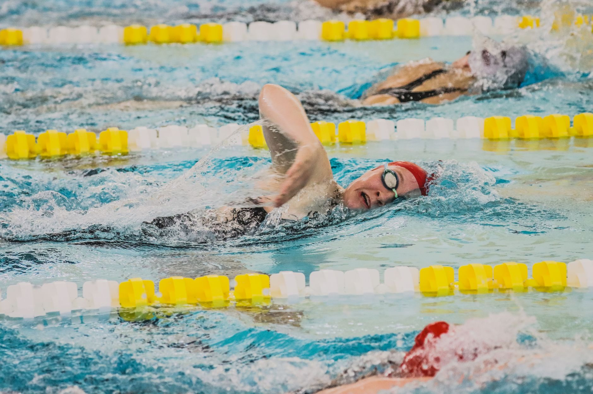

A Scholarship Announcement Worth Celebrating
The College Swimming and Diving Coaches Association of America (CSCAA) recently announced its 2026 Jean Freeman Scholarship recipients — a prestigious recognition honoring young athletes who demonstrate outstanding achievement both in the water and in the classroom. News like this is worth celebrating far beyond the college campuses where these athletes compete. It is a meaningful reminder to families right here in Wesley Chapel, Land O' Lakes, and across the greater Tampa Bay area that the investment made in youth aquatic sports today can open extraordinary doors tomorrow.
What Is the Jean Freeman Scholarship?
The Jean Freeman Scholarship is awarded annually by the CSCAA to collegiate swimmers and divers who exemplify the balance of academic excellence and athletic commitment. It honors the legacy of Jean Freeman, a dedicated advocate for student-athletes in aquatic sports. Recipients are selected not only for their performance in the pool but for their character, leadership, and scholastic achievement — qualities that colleges and universities actively seek in their recruiting processes.
While this scholarship recognizes college-level athletes, its roots go much deeper. The habits, work ethic, and love of the sport that earn a young person that kind of recognition are built over years — often beginning in community pools and local club programs during childhood and adolescence.
Why This Matters for Young Athletes in Tampa Bay
For parents raising young swimmers or water polo players in the Wesley Chapel and Land O' Lakes communities, stories like this one serve as an important compass. College athletic scholarships and academic awards do not appear overnight. They are the result of consistent training, strong grades, coachable attitudes, and a genuine passion for the sport — all developed over time.
Here are a few key things families should keep in mind as they think about the long-term journey:
- Start early and stay consistent. Young athletes who begin structured aquatic training at an early age develop technical skills and competitive experience that colleges look for in recruits.
- Academics matter just as much as athletics. Scholarships like the Jean Freeman Award make it clear that grades are not separate from an athlete's profile — they are central to it. Encourage your swimmer or water polo player to take their studies seriously year-round.
- Character is always being evaluated. College coaches and scholarship committees look at how young athletes carry themselves, how they treat teammates, and how they respond to adversity. These traits are built in practice every single day.
- Understand the recruiting timeline. The college recruiting process for swimmers and water polo players often begins earlier than most families expect. Being informed and proactive makes a significant difference.
How Nexar Aquatic Academy Supports the Journey
At Nexar Aquatic Academy, we believe that every young athlete who steps into the water has potential that extends far beyond the pool. Our programs in Wesley Chapel and Land O' Lakes are designed to develop technically skilled, mentally strong, and academically aware athletes — the kind of well-rounded individuals who grow into scholarship recipients and college competitors.
Our coaches work not just on stroke mechanics and game strategy, but on instilling the values of discipline, teamwork, and perseverance that define successful student-athletes at every level.
Encourage the Dream
If your child is a swimmer or water polo player with big goals, let news like the CSCAA Jean Freeman Scholarship announcement fuel that motivation. Remind them that excellence is earned one practice, one exam, and one day at a time. The Tampa Bay area is home to talented young athletes — and with the right support, guidance, and commitment, the future is wide open.
Celebrate the recipients of this year's scholarship, and then get back in the water. Your journey is just beginning.
Ready to get in the water?
First practice is completely FREE — no commitment needed.